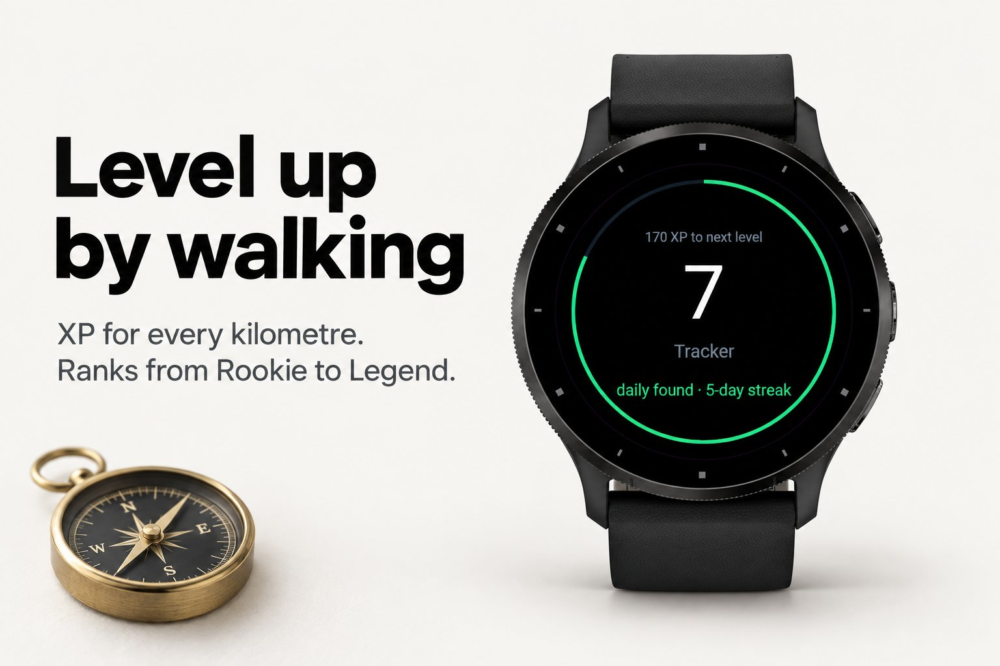
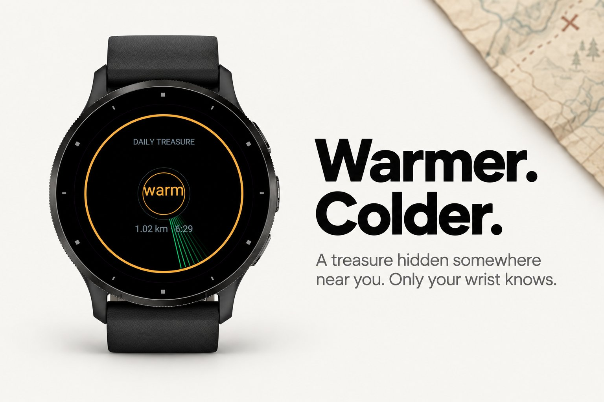
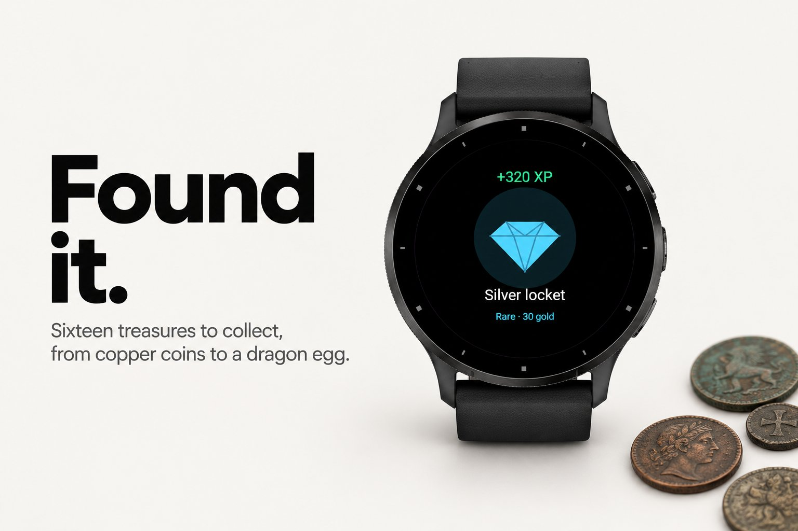
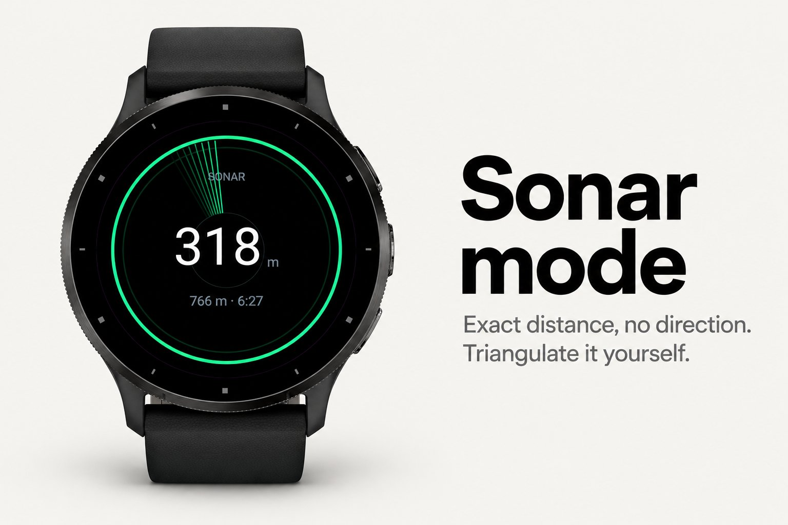
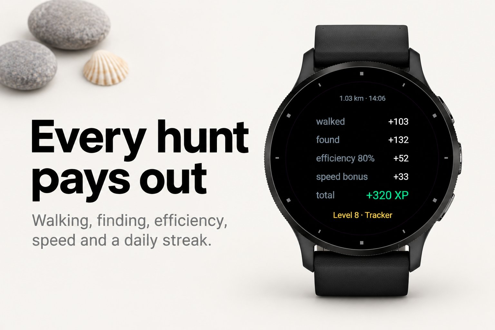

Sport & outdoors · Device app
GPS treasure hunt with warmer and colder buzzes.





Radar hides a treasure somewhere around you — a random direction, a random distance — and gives you nothing but warmer and colder. Two short buzzes: warmer. One long: colder. Close in and the radar starts ticking like a Geiger counter. Walk until it says burning. That's the whole game, and it gets people out of the door.
Every treasure is worth XP: for every kilometre walked, for the find itself, for how straight your line was and how fast you were. Level up from Rookie to Legend, earn hints, fill a collection of sixteen treasures from copper coins to a dragon egg, and keep a daily streak going with the shared daily treasure — the same bearing for everyone, today.
GPS. Works anywhere outdoors, no phone, no account, no map.